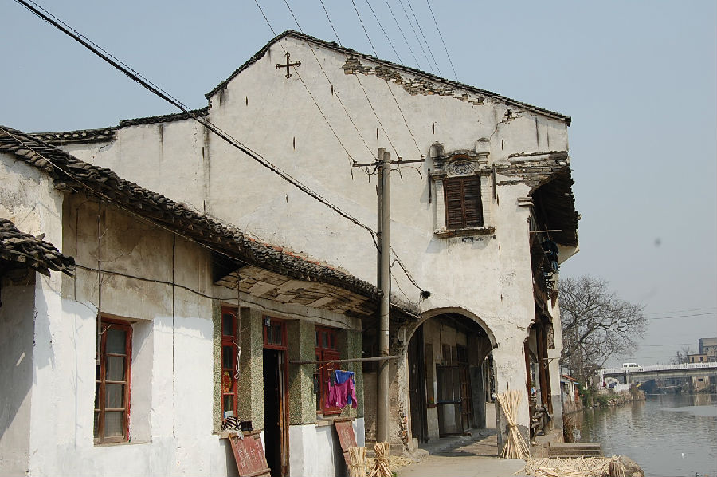
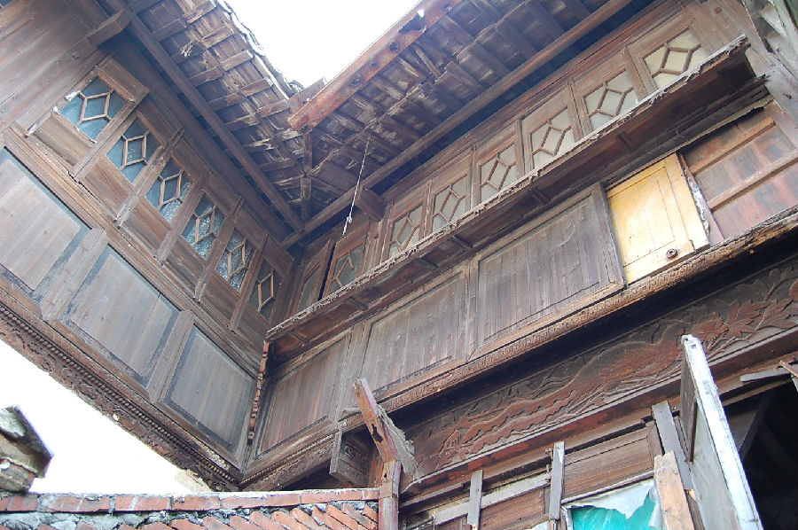

嘉兴市文物保护网 · 市级文物保护点 · 2020-11-06 · 原文


庆丰街张氏民宅位于嘉兴市秀洲区王店镇塘桥社区庆丰街51～54号，长水塘西岸，据张氏后人介绍和其形制推断建造年代为民国时期。张氏祖上是开羊行的。民宅原有五进，现存一进四开间二层建筑，占地面积184平方米，南北两侧有厢房，朝南有廊棚，廊棚临河设有美人靠。房屋为穿斗式五架梁，正方形柱础，东侧坊上雕有人物，西侧雕有凤，廊棚两侧山墙上有浮雕人物（南侧浮雕被泥封），房屋南北两侧均有界碑“横山草堂张墙界”。张氏民宅虽损毁严重，但其依河而建的形制和临河而设的美人靠，均反映了江南水乡建筑的特点，建筑构造严谨，宅内木构件雕饰精美，具有一定的历史和艺术价值。2010年公布为嘉兴市文物保护点。